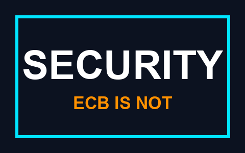
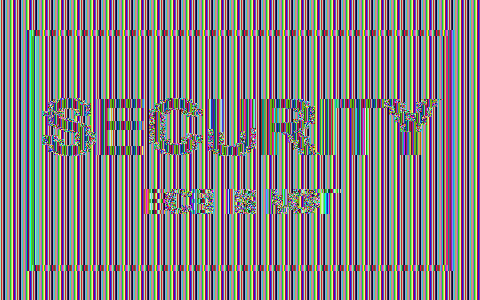

Encryption is not magic dust. It moves the secret, and you have to know where to.
| Plaintext | The message, readable |
| Ciphertext | The message, after encryption |
| Cipher | The algorithm. Public, published, studied for years |
| Key | The secret. The only secret |
| Cryptanalysis | Breaking it without being given the key |
Encryption gives confidentiality. Note what is missing from that sentence — everything else in this lecture is about the missing part.
The system must remain secure even if everything about it, except the key, is public knowledge.
The lesson lasts: a big key space is necessary and nowhere near sufficient.
Assume a machine testing 1012 keys per second:
| 240 | about a second |
| 256 (DES) | about 20 hours |
| 280 | about 38 years |
| 2128 (AES-128) | far longer than the universe has existed |
| DES | 1977, 56-bit key. Broken by dedicated hardware in 1998, in days. Dead |
| 3DES | DES three times, ~112-bit strength. Slow, 64-bit blocks. Disallowed by NIST |
| AES | 2001, Rijndael, FIPS 197. 128-bit blocks, 128/192/256-bit keys. The answer |
| ChaCha20 | The alternative, and faster where there is no AES hardware |
AES was chosen through a public competition with published analysis — Kerckhoffs's principle applied to the selection process itself.
Let us encrypt a picture with it.

The raw pixels of this image, AES-128, one key, ECB mode.

Every block is correctly encrypted with a strong cipher. Identical plaintext blocks produce identical ciphertext blocks, so the pattern survives.
Same cipher, same key, same data. The only change is that each block is XORed with the previous ciphertext first.
| ECB | Each block alone. Never use it. Ever |
| CBC | XOR with the previous ciphertext. Needs a random IV; needs padding; padding is attackable |
| CTR | Encrypt a counter, XOR with data. No padding, parallel, seekable |
| GCM | CTR plus authentication. This is the default answer |
$ printf 'security' | shasum -a 256
5d2d3ceb7abe552344276d47d36a8175b7aeb250a9bf0bf00e850cd23ecf2e43
$ printf 'securitz' | shasum -a 256
fa18fd7fe735f03b5dcce3556a08491555cee1fe4b0a86c509aa693a4eb707dc
$ shasum -a 1 s1.pdf s2.pdf
38762cf7f55934b34d179ae6a4c80cadccbb7f0a s1.pdf
38762cf7f55934b34d179ae6a4c80cadccbb7f0a s2.pdf
$ shasum -a 256 s1.pdf s2.pdf
2bb787a73e37352f92383abe7e2902936d1059ad9f1ba6daaa9c1e58ee6970d0 s1.pdf
d4488775d29bdef7993367d541064dbdda50d383f89f0aa13a6ff2e0894ba5ff s2.pdf
$ cmp s1.pdf s2.pdf
s1.pdf s2.pdf differ: char 193, line 8
Two different PDFs, one SHA-1. Produced by CWI and Google in 2017
and published at shattered.io.
| MD5 | Collisions since 2004, in seconds. Dead |
| SHA-1 | Collision demonstrated 2017, chosen-prefix 2020. Dead |
| SHA-256 / SHA-512 | The SHA-2 family. Fine, and everywhere |
| SHA-3 | Different construction, kept as insurance against a break in SHA-2 |
| BLAKE2 / BLAKE3 | Fast, modern, well regarded |
"Dead" still means dead where a deliberate collision matters — certificates, signatures, code updates.
HMAC(K, m) = H( (K ⊕ opad) ‖ H( (K ⊕ ipad) ‖ m ) )
Naively hashing key ‖ message is broken against SHA-2 by length extension: an attacker who never learns the key can still append to your message and produce a valid tag.
pay 100 to alice becomes something else of your
choosing, without the key
ct := gcm.Seal(nil, nonce, plaintext, nil)
out, err := gcm.Open(nil, nonce, ct, nil)
fmt.Printf("open as sent: %q err=%v\n", out, err)
ct[3] ^= 0x01 // flip a single bit of the ciphertext
out, err = gcm.Open(nil, nonce, ct, nil)
fmt.Printf("open one bit flipped: %q err=%v\n", out, err)
plaintext 16 bytes pay 100 to alice
ciphertext 32 bytes e7cced5c...45ca5a1a
the last 16 bytes are the authentication tag
open as sent: "pay 100 to alice" err=<nil>
open one bit flipped: "" err=cipher: message authentication failed
| Encrypt with the public key | only the holder of the private key can read it → confidentiality |
| Sign with the private key | anyone can verify who it came from → authentication, non-repudiation |
Same mathematics, opposite direction, completely different service. Confusing the two is the classic exam mistake.
| RSA | Factoring a large integer is hard. Encrypts, and signs |
| Diffie–Hellman | Discrete logarithms are hard. Agrees on a shared key — does not encrypt |
| Elliptic curve | The same problems over a curve, where they are harder per bit |
| Security level | Symmetric | RSA / DH | Elliptic curve |
| 112 bits | 3DES | 2048 | 224 |
| 128 bits | AES-128 | 3072 | 256 |
| 192 bits | AES-192 | 7680 | 384 |
| 256 bits | AES-256 | 15360 | 512 |
NIST SP 800-57. A 256-bit ECC key and a 3072-bit RSA key are the same strength — which is why everything new uses curves.
A signature over a broken hash is a broken signature — which is precisely why SHA-1 mattered.
$ openssl genpkey -algorithm ed25519 -out priv.pem
$ openssl pkey -in priv.pem -pubout -out pub.pem
$ openssl pkeyutl -sign -inkey priv.pem -rawin -in msg.txt -out msg.sig
sig bytes: 64
$ openssl pkeyutl -verify -pubin -inkey pub.pem -rawin \
-in msg.txt -sigfile msg.sig
Signature Verified Successfully
$ openssl pkeyutl -verify -pubin -inkey pub.pem -rawin \
-in msg2.txt -sigfile msg.sig # one character added
Signature Verification Failure
64 bytes, for a message of any size.
| MAC | Signature | |
| Keys | one, shared | a key pair |
| Who can verify | anyone who can also forge | everyone, and only the owner can sign |
| Non-repudiation | no | yes |
| Speed | very fast | much slower |
Both give integrity and origin. Only the signature settles an argument — with a MAC, either party could have produced the tag, so neither can prove the other did.
Public-key cryptography does not remove the need to distribute something securely. It reduces it to distributing something public.
*.google.com, used to intercept
Iranian users. The CA was distrusted and went bankrupt
One key, one purpose. A key that both signs and encrypts turns any flaw in either into a flaw in both.
crypto/rand, not math/rand
The cipher is almost never what fails. The way it was used is.